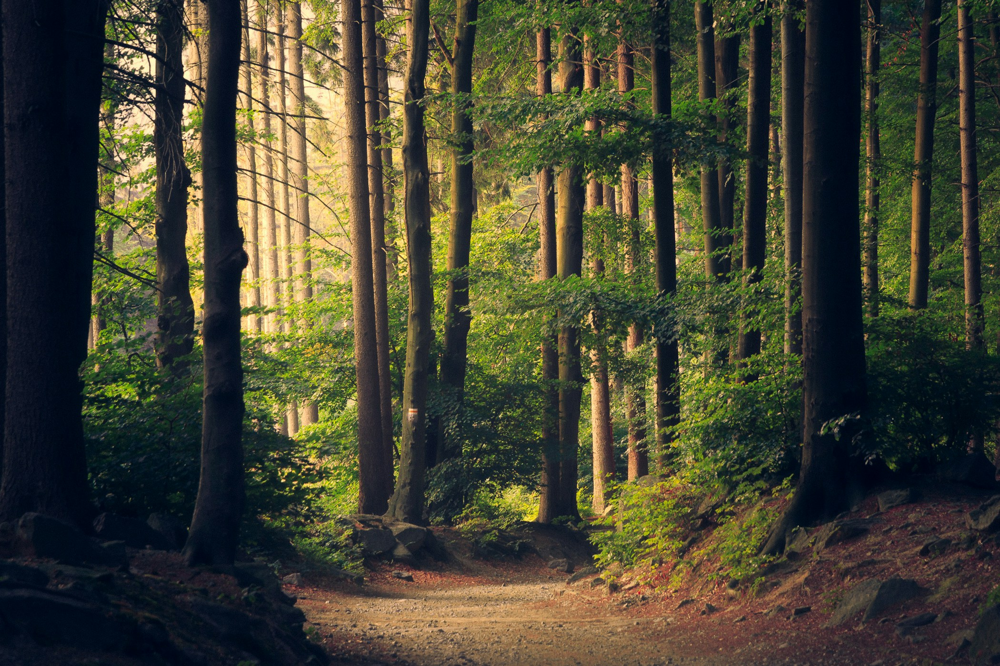
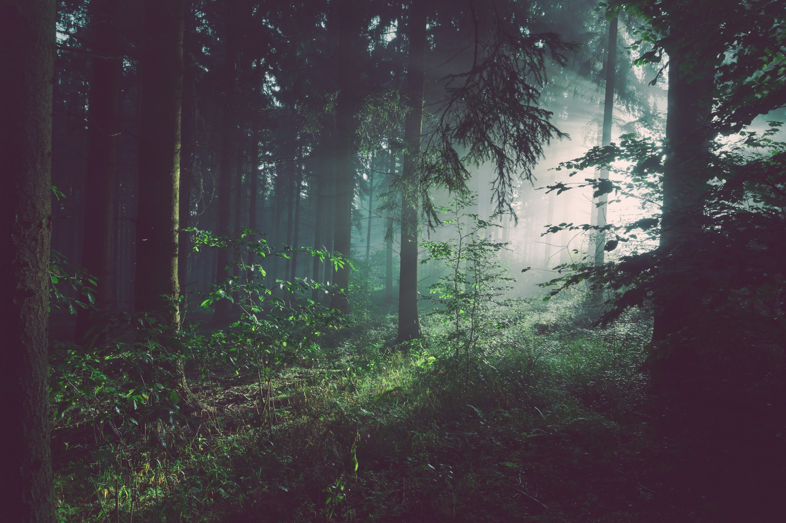

Apartman
Önálló utazási tervhez vagy egy közös zempléni pihenéshez. Az elérhető apartmanokról és az elhelyezésről kérjen tájékoztatást.
Érdeklődöm
NAPKELTE VENDÉGHÁZ · MOGYORÓSKA
Egy kis távolság a mindennapoktól.
Egy közös megérkezés a Zemplénbe.
3893 Mogyoróska
A ZEMPLÉNBEN, EGYMÁSHOZ KÖZELEBB.MEGÉRKEZNI IS JÓ.
A Napkelte Vendégház Mogyoróskán várja az érdeklődőket. Apartmanok, csoportos és ifjúsági szálláslehetőségek egy zempléni megállóhoz.
A tervezett időpontról, az elhelyezésről és az aktuális lehetőségekről egyeztessen velünk közvetlenül.
Kérdezek telefononHELY A KÖZÖS IDŐNEK.
Az elhelyezés pontos részleteiről
érdeklődjön az utazás tervezésekor.
Önálló utazási tervhez vagy egy közös zempléni pihenéshez. Az elérhető apartmanokról és az elhelyezésről kérjen tájékoztatást.
ÉrdeklődömAmikor többen indulnak útnak. Írja meg a létszámot és a tervezett időpontot, hogy egyeztethessük a lehetőségeket.
Egyeztetek a csoportrólIfjúsági szálláslehetőség Mogyoróskán. Az elhelyezés és az érkezés feltételeit előzetesen, közvetlenül egyeztesse velünk.
Kérek tájékoztatástJátszótér is szerepel a kínálatban. Az aktuális használati lehetőségekről kérjük, érdeklődjön.

MOGYORÓSKA · ZEMPLÉN
Mogyoróska a Zemplénben, a Regéci vár térségében található. Egy séta, egy kirándulás, egy közösen felfedezett hely — az útitervet Önök írják.
Kirándulóötlet: Regéci várA kirándulóhelyek megközelítéséről és látogatási feltételeiről indulás előtt tájékozódjon.
EGY MÁSIK NAPSZAK. EGY MÁSIK TEMPÓ.
Tovább az érdeklődéshez ↓Hagyjon időt a megérkezésre.
NAPKELTE VENDÉGHÁZ · MOGYORÓSKA
Írja meg a tervezett időpontot és a létszámot.
Az elhelyezést és az aktuális feltételeket egyeztessük közvetlenül.
Az érkezési címet és az érkezés részleteit
kérjük, előzetesen egyeztesse.